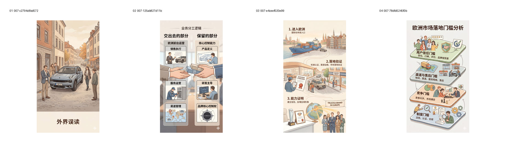
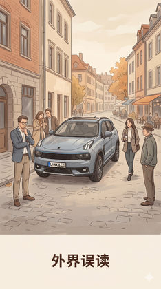
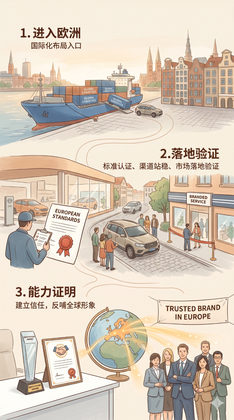

验证暖色 editorial narrative 作为更强故事入口的表现与过满风险。
Evidence: references/text2pic/conversations/007-Branch-1-V1视觉系统设计/IMAGE_MANIFEST.md § 7. 第六组：SVP 第 2 轮 W/H/C（12 张） / W


f4e8a691a88ae8a2…
905daf6c7651cf75…

f5abee81f63884e6…
b8f8086068eb7d9f…